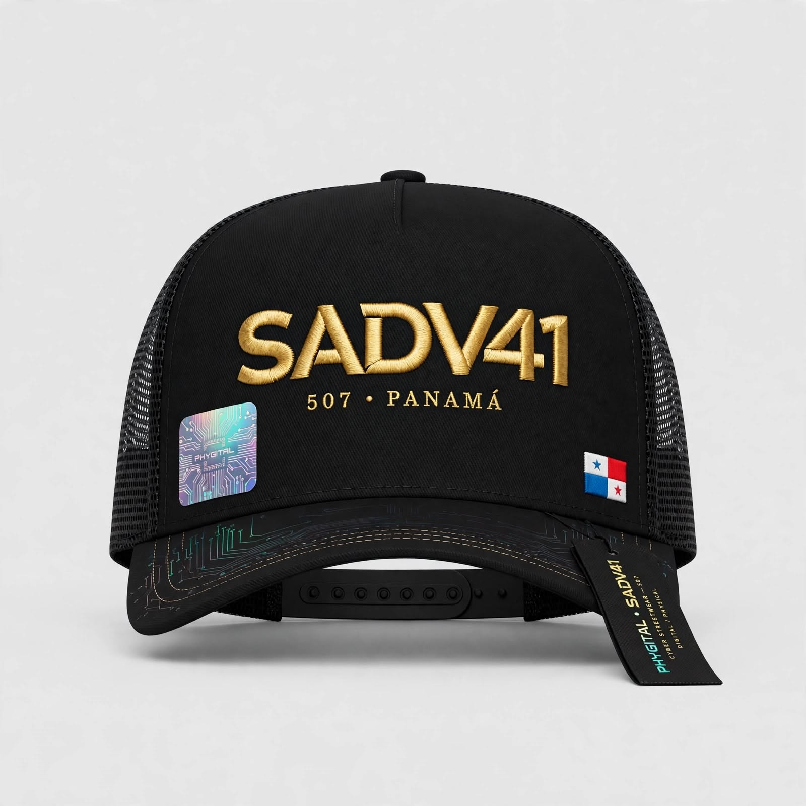

GTA VI · Conexión

Iniciando protocolo de enlace con nodo remoto...
> root@termux:~# init_connection -target "GTAVI"
> Cargando asset visual... [OK]
> Estableciendo túnel seguro... [OK]
> Esperando respuesta del servidor_
Página de fans, no afiliada a Rockstar Games.